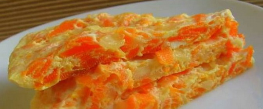

Рецепти
На цій сторінці ви можете знайти рецепт приготування корисного сніданку.
Сніданок - це найголовніший прийом їжі, ігноріроввать який не можна! Він дарує вам енергію і настрій на цілий день. Саме наші рецепти допоможуть вам швидко, якісно і правильно приготувати вам не тільки смачний, а корисний сніданок.
Омлет з морквою
Кількість калорій: 400
Морква очистити, натерти на дрібній тертці і додати в збиті в окремій...
Приготувати
Омлет з зеленої стручкової квасолею
Кількість калорій: 400
Дрібно нарізати квасоля і злегка обсмажити її в оливковій...
Приготувати
Салат ранковий
Кількість калорій: 400
Яблуко вимити і очистити від шкірки і насіння. Натерти сир і яблуко на дрібній тертці...
Приготувати